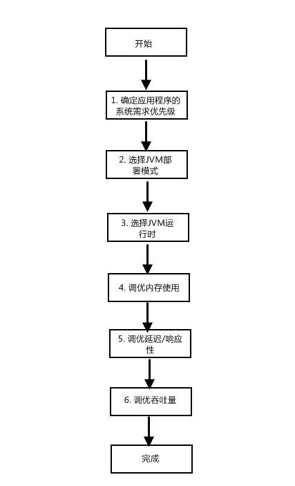

1 概述2 选择JVM部署模式2.1 单JVM部署2.2 多JVM部署2.3 32位与64位的选择3 选择JVM运行模式3.1 Client模式3.2 Server模式3.3 Tiered Server模式4 垃圾收集调优基础4.1 基本原则4.2 垃圾收集器选择4.3 推荐的GC日志命令行选项5 确定内存占用5.1 命令行选项5.1.1 Java堆5.1.2 新生代5.2.3 永久代5.2.4 元数据区(Java8及更高版本)5.2 堆大小调优着眼点5.3 计算活跃数据5.4 确定堆空间初始大小5.4.1 计算活跃数据大小5.4.2 计算堆空间初始大小6 调优延迟6.1 优化新生代大小6.2 优化老年代大小6.2.1 直接分析FullGC日志6.2.2 通过MinorGC日志计算FullGC频率6.2.3 GC日志中只有FullGC6.3 优化Survivor6.3.1 设定Survivor空间大小6.3.2 解析晋升阀值6.3.3 监控晋升阀值6.3.4 调优目标Survivor空间占用7 优化CMS7.1 理解CMS的优缺点7.2 调整老年代空间大小7.3 初始化CMS收集周期

上图描述了JVM调优的一般性流程。
应用程序的系统需求包括不同的方面,一般可概括为以下几个方面：
可用性
指当应用系统的某些组件发生故障或者失效时，应用程序或者应用程序的一部分在多大程度上还可以继续提供服务。
可管理性
对应用程序的配置、运行、监控、管理等操作带来的开销的度量。
吞吐量
应用程序单位时间内处理工作量。
延迟及响应性
指应用程序收到指令后从开始工作到完成工作所消耗的时间。
内存占用
应用程序所需内存的大小。
启动时间
应用程序初始化所消耗的时间。
优点
便于管理，同时减少了多个JVM自身带来内存开销。
缺点
当应用程序遭到灾难性错误或者JVM失效时，无法保证程序的可用性，即单点故障。
优点
增强了应用程序的可用性，同时在JVM多部署模式下，java堆通常比较小，较小的堆在垃圾收集时产生的停顿更小，一定程度上能带来更低的延迟。
缺点
加大了应用程序监控管理的成本。同时，如果不将不同的JVM绑定到不同的处理器集上的话，可能引起跨硬件线程的迁移，这是由于应用程序的线程和JVM线程被分别绑定到不同的cpu，对程序有负面影响。所以使用多JVM部署模式时，强烈建议将不同的JVM绑定到不同的处理器集。
如果应用程序需要消耗的内存超出了32位JVM的处理能力，那么就使用64位JVM。但是在使用64位JVM时要先确认应用程序中是否所有的第三方模块都支持64位JVM。 另外，如果程序中使用了JNI(java本地接口)，那么必须要使用64位JVM编译。
一般情况下，使用的JVM数越少越好，不仅便于管理，同时消耗的总内存也越少。但是对于特殊需求的应用，要适当选择。
命令行选项： -client
启动快，占用内存少，JIT编译器生成代码的速度更快。
命令行选项：-server
提供了更复杂的生成码优化功能，对于服务器应用而言尤其重要。
Java7正式发布
命令行选项：-server –XX:+TieredCompilation
结合了前两者的优点，即快速启动和高效的生成码。
如果初始时不知道选择哪一种运行模式，那么就使用server模式，当启动时间或者内存占用无法满足要求时，如果JVM版本支持，那么就使用Tiered Server模式，如果还不能满足要求，那么就使用client模式。
MinorGC回收原则
即每次MinorGC都尽可能多地收集垃圾对象，以便减少FullGC的频率。
GC内存最大化原则
处理吞吐量和延迟的问题时，垃圾处理器能使用的内存越大，即java堆空间越大，垃圾收集的效果越好，应用程序也运行地更流畅。
GC调优3选2原则
在三个性能指标（吞吐量、延迟和内存占用）中选择两个进行JVM垃圾收集器调优、因为这三者中任何一个或者两个性能上的提升都会带来另两个或者另一个指标性能的下降。
很多情况下，ThroughPut收集器就能达到应用程序的停顿时间要求，所以可以从ThroughPut收集器开始入手，当需要时再转向CMS收集器。
-XX:+PrintGCTimeStamps –XX:+PrintGCDetails –Xloggc:
适用于所有应用程序的最小命令行选项集。同样适用于生产环境，因为开启GC日志对性能的影响极小。
-XX:+PrintGCDateStamps
如果希望GC日志中时间以日期格式显式。
-XX:+PrintGCApplicationStoppedTime –XX:+PrintGCApplicationConcurrentTime
针对调优延迟较高的应用，通过它们可以获得应用程序在安全点的停顿时间及两次安全点操作之间程序运行的时间。
-XX:+PrintSafepointStatistics
将垃圾收集的安全点与其他的安全点区分开来，更便于查找应用高延迟的根源，是垃圾收集引起还是java代码引起。
在调优内存占用时，首先要清楚jvm的内存布局：HotSpot中主要分为三个空间，新生代、老年代和永久代(java8中为元数据区)。而新生代空间加上老年代空间称为java堆。 java应用程序在分配java对象时，首先在新生代空间中分配对象，历经几次MinorGC后依旧存活的对象会被提升到老年代。永久代空间中存放VM和java类的元数据及驻留的Strings和类静态变量。
–Xms[g|m|k] 和 –Xmx[g|m|k]
–Xms设定了java堆的初始大小及最小值，–Xmx设定了java堆的最大值。
当-Xms设定的值小于-Xmx设定的值时，jvm会根据应用程序需要动态地收缩或者扩展java堆大小，但是最小值不会小于-Xms设定的值，最大值不会大于-Xmx设定的值。
关注吞吐量及延迟的java应用程序都应该将-Xms和-Xmx设定为相同的值，这是因为无论是收缩还是扩展java堆大小，都会进行FullGC，而FullGC会降低程序的吞吐量并导致更长的延迟。
-XX:NewSize=[g|m|k]
设定新生代空间大小的初始值，也是最小值。如果使用了该选项，应当同时指定 -XX:MaxNewSize=<n>[g|m|k]。-XX:MaxNewSize=[g|m|k]
设定新生代空间大小的最大值。 如果使用了该选项，应当同时指定 -XX:NewSize=<n>[g|m|k]-Xmn[g|m|k]。
设置新生代空间的初始值、最小值及最大值。注意：当-Xms和-Xmx指定了不同的值时，如果使用了-Xmn，java堆大小的动态变化不会影响新生代的大小，也就是说新生代空间大小保持恒定。因此，只有在-Xms和-Xmx使用了同一值时才使用-Xmn。
-XX:PermSize=[g|m|k]
设置永久代空间的初始值及最小值。-XX:MaxPermSize=[g|m|k]
设置永久代空间的最大值。关注性能的Java应用程序应该将永久代的初始值及最大值设置为同一值，因为永久代空间的大小调整需要进行FullGC。
-XX:MetaspaceSize=[g|m|k]
设置元数据区的初始值及最小值。-XX:MaxMetaspaceSize=[g|m|k]
设置元数据区的最大值。关注性能的Java应用程序应该将元数据区的初始值及最大值设置为同一值，因为元数据区的大小调整需要进行FullGC 。
如果你很清楚Java应用程序要使用多大的Java堆，那么就通过-Xms和-Xmx直接设置。否则就不去显式的指定java堆的大小，让JVM自动设定。
如果想要知道JVM自动设定的java堆初始值及最大值，可以通过 –XX:+PrintCommandLineFlags 查看。
如果GC日志中出现了OutOfMemoryError，首先要确定是哪个空间发生了内存溢出，那么就增加其空间的大小，然后继续测试，直到GC日志中不再出现OutOfMemoryError。
活跃数据大小是应用程序运行稳定后，FullGC后java堆中老年代和永久代占用的空间大小。
要计算活跃数据大小，首先要在程序稳定后，收集多次FullGC数据，然后综合其平均值，来计算出活跃数据大小。
如果使用了jConsole等性能检测工具，可以通过工具的垃圾回收功能强制进行FullGC，然后收集多次FullGC的日志数据。或者也可以使用jmap命令行来触发FullGC: jmap –histi:live pid , 其中pid为应用程序的JVM进程号。
根据活跃数据大小确定堆空间初始大小。
下面，我们以一份FullGC日志为例（实际中要以多份数据取平均值为准，此处为了简单演示只取一份），计算出其活跃数据大小，然后确定堆空间初始大小。
GC日志:119.196:[Full GC (System.gc())[PSYoungGen: 11701K->0K(640000K)][ParOldGen: 80574K->44351K(99840K)]92276K->44351K(739840K),[Metaspace: 47859K->47799K(1091584K)],0.1379948 secs][Times: user=0.48 sys=0.01, real=0.14 secs]
在上面的GC日志中，我们可以得到，FullGC之后老年代的空间占用为44351K，约为44M；永久代（因为我用的是java8，所以此处为元数据区）的空间占用为 47799K，约为48M；两者相加，得到活跃数据大小 92M。下面，我们就以该活跃数据大小作为标准来确定堆空间初始大小。
计算各空间初始大小时有几条通用法则可以遵循：
将java堆的初始值和最大值设置为老年代活跃数据大小的3 ~ 4倍。
在上面的GC日志分析中，我们得到老年代活跃数据大小为44M，那么java堆的初始及最大值就应该设置在132M ~ 176M之间。
永久代的初始及最大值设置为永久代活跃数据大小的1.2 ~ 1.5倍。
在上面的GC日志分析中，我们得到永久代活跃数据大小为48M，那么永久代的初始及最大值就应该设置在57.6M ~ 72M之间。
新生代的初始及最大值应该设置为老年代活跃数据大小的1-1.5倍。
在上面的GC日志分析中，我们得到老年代活跃数据大小为44M，那么新生代的初始及最大值就应该设置在44M ~ 66M之间。
综上分析，我们可以得到5.4.1示例中的GC日志的应用程序对应的java命令行：
-Xms176m –Xmx176m –Xmn66m -XX:MetaspaceSize=72m -XX:MaxMetaspaceSize=72m
在应用程序的延迟调优指标中，有两项与新生代大小密切相关：
应用程序可接受的平均停滞时间。
近似可以认为是MinorGC的平均持续时间
应用程序可接受的MinorGC频率。
新生代空间越大，MinorGC的频率越低，但是平均持续时间越长；空间越小，MinorGC的平均持续时间越短，但是频率更高。
示例：
xxxxxxxxxx304.109:[GC (Allocation Failure) 304.109:[ParNew: 35756K->491K(39296K), 0.0608168 secs]91471K->56766K(126720K), 0.0608824 secs][Times: user=0.19 sys=0.00, real=0.06 secs]350.693:[GC (Allocation Failure) 350.693:[ParNew: 35435K->171K(39296K), 0.0015115 secs]91710K->56448K(126720K), 0.0015668 secs][Times: user=0.00 sys=0.00, real=0.00 secs]397.422:[GC (Allocation Failure) 397.422:[ParNew: 35115K->80K(39296K), 0.0015687 secs]91392K->56358K(126720K), 0.0016275 secs][Times: user=0.00 sys=0.00, real=0.00 secs]443.956:[GC (Allocation Failure) 443.956:[ParNew: 35024K->147K(39296K), 0.0015718 secs]91302K->56425K(126720K), 0.0016533 secs][Times: user=0.00 sys=0.00, real=0.00 secs]491.099:[GC (Allocation Failure) 491.099:[ParNew: 35091K->151K(39296K), 0.0014458 secs]91369K->56431K(126720K), 0.0014981 secs][Times: user=0.00 sys=0.00, real=0.00 secs]
上面这段GC日志显式了5条MinorGC信息，我们可以计算出其平均频率约为37.5s/次，而每次的平均持续时间约为0.07s。得到这两个数据后，我们便可以与应用程序的需求相对比，适当调整新生代大小。
在调整新生代大小时，需要谨记以下几个准则：
在应用程序的延迟调优指标中，有两项与老年代大小密切相关：
应用程序可接受的最大停顿时间。
近似可以认为是最差情况下FullGC的停顿时间。
应用程序可接受的最大停顿发生的频率。
近似可以认为是FullGC的频率。
老年代空间越大，FullGC的频率越低，但是平均持续时间越长；空间越小，FullGC的平均持续时间越短，但是频率更高。
示例：
xxxxxxxxxx1363.336:[Full GC (System.gc()) 1363.336:[CMS: 56281K->37666K(87424K), 0.1606582 secs]83085K->37666K(126720K),[Metaspace: 47791K->47791K(1091584K)], 0.1608090 secs][Times: user=0.14 sys=0.00, real=0.16 secs]1532.195:[Full GC (System.gc()) 1532.195:[CMS: 37666K->37433K(87424K), 0.1295682 secs]69024K->37433K(126848K),[Metaspace: 47754K->47754K(1091584K)], 0.1296901 secs][Times: user=0.13 sys=0.00, real=0.13 secs]1663.839:[Full GC (System.gc()) 1663.840:[CMS: 37433K->37317K(87424K), 0.1178789 secs]65560K->37317K(126848K),[Metaspace: 47762K->47762K(1091584K)], 0.1179843 secs][Times: user=0.11 sys=0.00, real=0.12 secs]
上面这段GC日志显式了3条FullGC信息（有点少，在实际分析中需要更多的采样，此处只做一个简单示例），我们可以计算出其平均频率约为150s/次，而每次的平均持续时间约为0.14s。得到这两个数据后，我们便可以与应用程序的需求相对比，适当调整老年代大小。
直接通过FullGC日志比较容易优化老年代大小，但是，有些应用在稳定运行后可能几乎不发生FullGC，基本只有MinorGC日志，那么，我们要学会通过MinorGC日志来计算FullGC的频率。
示例：
xxxxxxxxxx2150.350:[GC (Allocation Failure) 2150.350:[ParNew: 35600K->533K(39424K), 0.0021108 secs]73377K->38372K(126848K), 0.0021720 secs][Times: user=0.00 sys=0.00, real=0.00 secs]2184.998:[GC (Allocation Failure) 2184.998:[ParNew: 35605K->533K(39424K), 0.0023574 secs]73444K->38435K(126848K), 0.0024184 secs][Times: user=0.00 sys=0.00, real=0.00 secs]2219.632:[GC (Allocation Failure) 2219.632:[ParNew: 35605K->533K(39424K), 0.0020601 secs]73507K->38495K(126848K), 0.0021207 secs][Times: user=0.00 sys=0.00, real=0.00 secs]2254.609:[GC (Allocation Failure) 2254.609:[ParNew: 35605K->689K(39424K), 0.0022517 secs]73567K->38713K(126848K), 0.0023163 secs][Times: user=0.00 sys=0.00, real=0.00 secs]2289.323:[GC (Allocation Failure) 2289.323:[ParNew: 35761K->533K(39424K), 0.0020707 secs]73785K->38620K(126848K), 0.0021276 secs][Times: user=0.00 sys=0.00, real=0.00 secs]
首先，从上面的日志中我们可以很容易的得到以下信息：
因为该应用稳定运行后几乎不进行FullGC，那么为了获取活跃数据大小，我们可以进行手动GC采样分析，假如我们得到了老年代活跃数据大小约为30000K，那么意味着老年代可用空间约为87474-30000=57474K。
然后分析每次MinorGC之后老年代空间占用变化：73377K-> 73444K-> 73507K-> 73567K-> 73785K，这5次变化对应着4次增长，可以计算出每次增长的平均值为(73785-73377)/4=408K。根据MinorGC的频率34.74，我们可以得到FullGC的增长率 408/34.74=12K/s(近似值)，而老年代的可用空间为57474K，可以得到填满老年代大约需要 57474/12=4789.5s，约为80分钟。这样，我们变得到了FullGC的大致频率为80分钟/次，将该数值与应用需求相对比，可以进行老年代大小的优化。
如果你发现GC日志中只有FullGC，那么引起这个问题的原因通常是由于老年代空间不足以容纳所有从新生代提升的对象，或者永久代(元数据区)空间不足。此时就要增大老年代或者永久代(元数据区)空间大小。
MinorGC时，对于”to”和”from”两个Survivor空间，如果to中不足以容纳从Eden和from中复制过来的对象时，溢出的对象就会被直接提升到老年代，从而加速老年代空间消耗，最终导致STW式的FullGC。
调整Survivor空间大小，要让其有足够的空间容纳存活对象足够长的时间，直到几个周期后对象老化，从而避免发生Survivor空间溢出。
Survivor空间的大小可以通过下面的命令行选项设置:
-XX:SurvivorRatio=<ratio>
ratio表示单个Survivor空间同Eden空间大小的比例，即 EdenSize/OneSurvivorSize = ratio，ratio的值必须大于0。 如果设定了-XX:SurvivorRatio = 6，而新生代空间为480M，那么就可以计算出单个Survivor的大小为 480/(6 +2)=60M，此时Eden空间大小为 60*6=360M。
增大Survivor空间大小时，如果新生代大小保持不变，那么会使Eden空间减小，而Eden空间的减小会增加MinorGC的频率。为了同时满足应用程序对MinorGC频率的要求，在增大Survivor空间大小时，应该保持Eden大小不变，也就是增大新生代大小。
一个对象的年龄就是它所经历的MinorGC的次数，当对象的年龄到达晋升阀值时，对象会被提升到老年代。
晋升阀值计算的依据是MinorGC之后新生代要容纳的可达对象需要的空间大小以及目标Survivor空间占用的空间大小。
可以通过下面的命令行选项设置对象的晋升阀值:
-XX:MaxTenuringThreshold=
java5 update6之后最大晋升阀值可以设置在0-15之间，而之前版本可以设置在0-31之间。
注意：
设置晋升阀值时，不要设置为0。
这会导致新分配的对象在MinorGC后直接提升到老年代，从而引起频繁的FullGC也不要将晋升阀值设置的远远大于实际值，这会导致对象长期驻存在Survivor空间而导致溢出，Survivor溢出后，对象直接被提升到老年代，加速老年代空间消耗，从而引起FullGC。
-XX:+PrintTenuringDistribution
上面的命令行选项可以监控晋升的分布或者对象年龄分布，可以以此为依据确定最优的最大晋升阀值。
下面是一段晋升分布的日志：
xxxxxxxxxxDesired survivor size 2228224 bytes, new threshold 6 (max 6)- age 1: 642200 bytes, 642200 total- age 2: 22656 bytes, 664856 total- age 3: 12288 bytes, 677144 total- age 4: 12048 bytes, 689192 total- age 5: 12584 bytes, 701776 total- age 6: 12096 bytes, 713872 total
在上面的日志中，第一行中max 6表示当前的最大晋升阀值为6 。在第二行中，642200 bytes表示年龄为1的对象在Survivor中占用的空间大小，642200 total表示当前年龄及小于当前年龄的所有对象占用的空间大小。
可以看到，年龄超过3的各阶段对象，大小都在12k，可以说只有非常少的对象年龄能超过3，此时，可以尝试将最大晋升阀值设置为3，然后继续监控测试。如果由于晋升阀值的减少使得老年代空间增长过快，那么就适当增大晋升阀值，再继续监控测试，如此反复，直到找出最适合的监控阀值。
目标Survivor空间占用是jvm在尝试MinorGC后仍然维持的Survivor空间占用，及两块Survivor空间中to空间大小的占比。
可以通过命令行选项 –XX:TargetSurvivorRatio=<percent> 对该值进行调整。percent是表示百分比，默认值为50。
极少情况下需要对目标Survivor空间占用进行调优。如果应用有稳定的对象分配速率，可以考虑将percent提高到80 ~ 90，这样可以减少用于老化对象的Survivor空间的数量。但是也会带来不能适应对象分配速率迅速上涨的情况，因为对象分配速率的增大会使得对象被过早的提升到老年代，加速老年代消耗。当使用CMS时，这些对象在FullGC后是一定会被收集的，这样就会产生大量的空间碎片，最终导致STW式的FullGC。
在理解CMS的优缺点时，我们用Throughput收集器（ParallelOld）与之对比讲解。
MinorGC阶段
使用CMS时的MinorGC可能会比使用Throughput时的持续时间长，这是由于当对象提升带老年代时，CMS在老年代通过空闲列表分配内存，而Throughput在老年代通过指针分配内存，要比CMS快。
FullGC阶段
使用CMS时整个FullGC阶段的持续时间更长，同时也会降低程序吞吐量。这是由于CMS在并发阶段是和java线程并行的，这就需要消耗额外的cpu资源，从而降低吞吐量。 同时CMS的FullGC之后会导致老年代空间碎片化，如果严重到一定程度，会导致STW式的FullGC。 但是从整个FullGC阶段来讲，CMS的总停顿时间要比Throughput短。
从Throughput收集器迁移到CMS时需要遵循一个通用原则，那就是将老年代空间增大20% ~ 30%。这是由于CMS在并发标记和并发清除阶段，依然会进行MinorGC，也就一直会有对象从新生代提升到老年代。
成功的CMS调优要能以对象从新生代提升到老年代的同等速率进行垃圾回收，达不到这个标准称之为”失速”。避免失速的关键在于足够大的老年代空间和足够快的初始化CMS垃圾收集周期，让其垃圾收集速率高于对象提升速率。
-XX:CMSInitiatingOccupancyFraction=<percent>
该命令行选项可以设置CMS在老年代空间占用达到percent百分比时启动垃圾收集。使用该选项的一个通用原则是老年代占用百分比至少是活跃数据大小的1.5倍。-XX:+UseCMSInitiatingOccupancyOnly
该命令行选项表示总是使用 -XX:CMSInitiatingOccupancyFraction=<percent> 中设置的percent作为CMS垃圾收集的启动阀值，如果不使用该选项，那么jvm只在第一次CMS垃圾收集时使用percent作为阀值，之后将自适应的启动CMS垃圾收集。